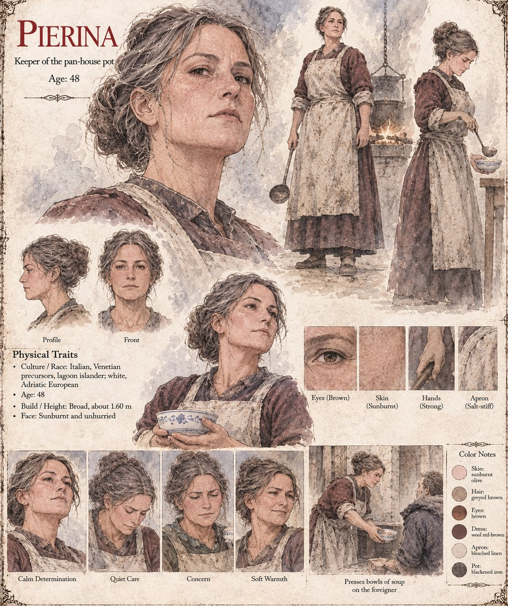

Pierina
Keeper of the pan-house pot · Marin Fasan’s wife · 48 on the sheet
Marin’s wife is a broad, sunburnt, unhurried woman called Pierina, who kept a pot on the pan-house hearth that had not, in thirty years, been allowed to go cold. Through the summer she presses bowls of it on the foreigner at the Duke’s pans, who bows to each, thanks her in his borrowed Aquilucian and passes it, untasted, to the first raker who looks hungry. On the evening of the twenty-first of Iverin she puts the bowl down on the sill of the salt-store window instead, without a word, and goes away; he takes it up and eats it standing outside in the dusk, every spoonful, with the bowl in both hands. From the door of the pan-house she says that he eats like a man who has been told it is borrowed. He does not answer; he bows to the empty yard, to the pot and to the red light going out along the dikes, and she stands a long while at the door, aware that she has said something true and been thanked for it in a language she does not speak.
The manuscript gives her breadth, her sunburn, her unhurried manner, the pot and the thirty years, and no age, height, hair or eye colour. The sheet’s age of 48, build of about 1.60 m, brown eyes, greying brown hair in a bun, red-brown wool dress, bleached-linen apron and blue-and-white bowl are its own, as are its panels Calm Determination, Quiet Care, Concern and Soft Warmth. Its scene Presses bowls of soup on the foreigner condenses the manuscript, and the word soup is the sheet’s, since the manuscript speaks only of the pot; it also draws him seated on the ground in a plank-walled pan-house, where the manuscript has him eat standing outside. Its title, Keeper of the pan-house pot, follows the manuscript.
“a broad, sunburnt, unhurried woman called Pierina, who kept a pot on the pan-house hearth that had not, in thirty years, been allowed to go cold”
Appears In

Related Subjects


Related Records

On the evening of the twenty-first of Iverin, at the Duke’s southern pans, Pierina, who keeps a pot on the pan-house hearth that has not in thirty years been allowed to go cold, puts a bowl on the sill of the salt-store window, without a word, and goes away. Higaide takes it up and eats it standing, outside in the dusk, with the bowl held in both hands; she tells him from the door that he eats like a man who has been told it is borrowed.